01The problem
Algorithms and settings give very different maps of disturbance on the same area (Cohen et al. 2017), and a LandTrendr map depends on a handful of settings the literature names: how many segments the trajectory may have, how hard a single-year spike is damped, how fast a recovery may be, and the p-value a fitted model must pass (Kennedy et al. 2010; Cohen et al. 2018). The defaults are a compromise for forests and Landsat; your series, your index and your idea of a change are not the compromise.
Tuning by eye has two flaws. The pins are the cases you thought of, and a pixel that looked wrong is easier to fix than a hundred that looked fine. And once the pins read as you want, they are the only evidence that the parameters are good: if the same points then estimate the accuracy, the accuracy is optimistic, because the tool was chosen to fit them.
The window of this guide does what a careful analyst would do on paper. It takes reference points, each with the year of its change or none; runs the tool's own pixel kernel on their series with many sets of parameters (a Latin hypercube over the ranges the literature suggests); scores the date each set would map at each point; and shows what that costs in omissions and false changes. The points that calibrate are set apart from the points that estimate the accuracy.
02The example
The data are synthetic
The series, the labels and the truth come from a script, not from a satellite. That is on purpose: in a real study the truth is unknown, and here the guide can compare the maps with what really happened, at the end, to see whether the tuning helped beyond the points that tuned it. The numbers show how to read the tool; they say nothing about LandTrendr on a real forest.
An 18 × 12 km forest frontier (600 × 400 pixels of 30 m, UTM zone 23S), one annual NDVI composite a year from 2000 to 2020, 21 files. Forest stands at 0.82 and pasture at 0.55, a river crosses the scene, and every pixel-year carries a little noise. Patches of forest are cleared in known years (the NDVI falls to 0.30 that year and settles at pasture's 0.55), others are degraded (a dip of up to 0.2 that recovers in about five years), and a few pastures regrow. Where each change happened is saved apart, as the truth.
The project is a stratified random sample of 525 points, its strata drawn from the detection map of a LandTrendr-like algorithm (no change, a change in 2000–2009, a change in 2010–2020, and a buffer of two pixels around the changes), already interpreted by two people: Ana labelled 500 of the points and Bruno 300, with disagreements, a few Cloud / no data, and the date of each change. The Validation guide shows how such a project is made; here it is only the reference.

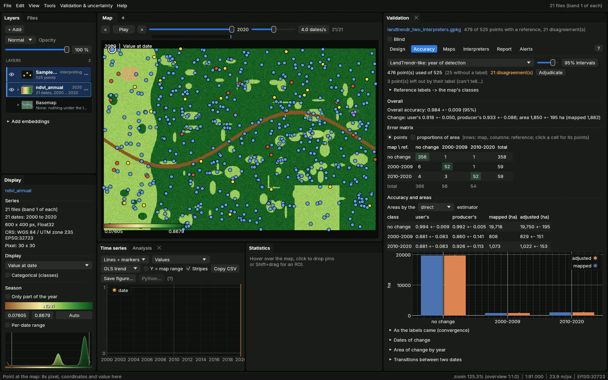
How these screenshots were made
The data are the synthetic frontier of Janus's validation tests: a folder with ndvi_annual/ (the 21 NDVI files), answers/ (the truth) and landtrendr_two_interpreters.gpkg with its strata raster. The tour copies the project into the temporary files first, because the calibration split is saved into the project; the originals are never written. This remakes the screenshots, and prints the numbers quoted below:
The screenshots, saved as PNGs in the folder shots (DATA is the data folder):
janus --threads 4 --shots tune DATA shotsThe tour drives the real window, one step after the other, in 1680 × 1050; the full-window ones are then converted to JPEG, and python tools/make_webp.py makes their WebP twins.
03Opening the window
Open the series with File → Open folder... and the project with Validation & uncertainty → Open project.... Then open LandTrendr, Tools → Change detection → LandTrendr: its window has Tune on samples... beside Reset to defaults. The tools that give a change date have it (LandTrendr, CCDC, S-CCD, BFAST, BFAST Lite, BFAST Monitor, CODED, EWMACD and BEAST); a tool that cannot run on the series open has it disabled, with the reason.

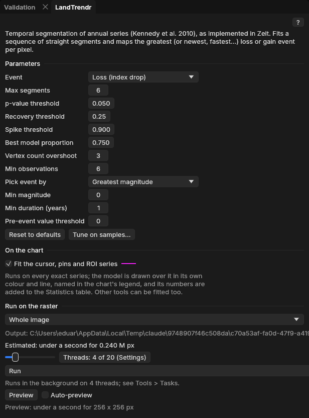
04The calibration split
The Reference section of the window offers two sources of points: the calibration points of the open project, or a vector layer of points with a field of dates (a year or a date, empty for no change). The project is the one that matters here. A project that never drew a split cannot calibrate anything yet, and the window says so:

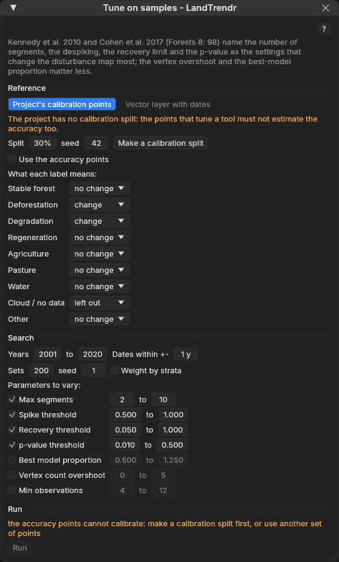

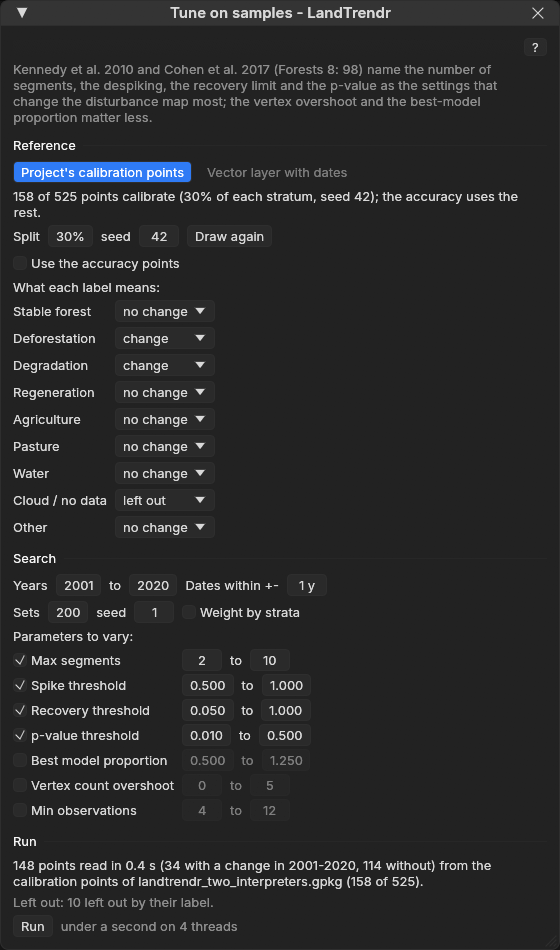
Make a calibration split draws, inside each stratum, 30% of the points (the share and the seed are the window's to change; this one is 30% with seed 42) and keeps their ids in the project. The draw is reproducible and it is saved: the split is part of the project from then on.
Why the points are kept apart
A tool tuned on a set of points fits them: the parameters that came out on top are the ones that happen to read these points right, noise included. Their accuracy on those same points says how well the search worked, not how good the map is. The accuracy has to come from points the search never scored, so the Validation panel leaves the 158 out ("158 points calibrate a tool (left out)") and estimates on the others with the same stratum weights. That is still a stratified random sample, a smaller one, so the intervals are wider; a design that expects to tune a tool should draw more points. The window refuses the accuracy points as a reference, with the reason, and the box Use the accuracy points is there only to say so.
What each label means
The window translates the project's labels to change, no change or left out, starting from the translation the project already has for its map of events. Here Deforestation and Degradation are changes, Stable forest, Regeneration, Agriculture, Pasture, Water and Other are not, and Cloud / no data is left out, as is any point without a label or whose interpreters disagree and nobody adjudicated. A point of change takes the year of its earliest change, from its date and its events. Of the 158 calibration points, 10 are left out, and the 148 read are 34 with a change between 2001 and 2020 and 114 without.
Thirty-four changes is not many
With fewer than 30 points with a change the window warns that the scores are unreliable, and 34 is close to that line. It is enough to show how the tool works, and a reason to read the optimism below with some suspicion.
05The search
The Search section sets what the sets are scored on and what varies:
- Years
- The window in which a change counts, in the reference and in the map: 2001 to 2020. The series starts in 2000, and a change in its first year has no year before it to be compared with.
- Dates within ±
- How far a map's year may be from the reference's and still agree: 1 year. LandTrendr dates a loss at the vertex before the drop, so its year is usually the year before the NDVI is first low; a tolerance of 0 would call that wrong.
- Sets
- 200 sets of a Latin hypercube over the ranges, plus the defaults and the values the tool's window has now (the current ones): 202 rows. The seed is 1, and the same seed gives the same sets.
- Weight by strata
- Off: every point counts once. On, a point counts for its stratum's area over the points drawn in it. It is a calibration, not an area estimate; the weights only matter when the strata are very unequal.
Four parameters vary by default, the ones the literature finds most influential (hover for the id and the scale), each over its range, editable:
| Parameter | Range | Scale | Default |
|---|---|---|---|
| Max segments | 2 – 10 | whole numbers | 6 |
| Spike threshold | 0.5 – 1 | linear | 0.9 |
| Recovery threshold | 0.05 – 1 | log | 0.25 |
| p-value threshold | 0.01 – 0.5 | log | 0.05 |
The best-model proportion, the vertex count overshoot and the minimum observations can be ticked on too. The parameters that choose which event is mapped (the minimum magnitude, the minimum duration, the pre-event threshold) are not searched: they stay as the tool's window has them, and here that is the defaults, 0.
The points' series are read once, at full resolution (148 points in 0.4 s), one set is timed, and the estimate stands beside Run: "under a second on 4 threads". A search is a task, listed in Tools → Tasks with its progress and a Cancel, on the processing threads of the Settings. It is that fast here because 148 series of 21 years are tiny; on a project of a thousand points with monthly series the estimate says minutes, and says it before you press anything.
06Reading the results
The 202 sets ran in about a tenth of a second. The window grows a table, a scatter, a bar for each parameter and a check:

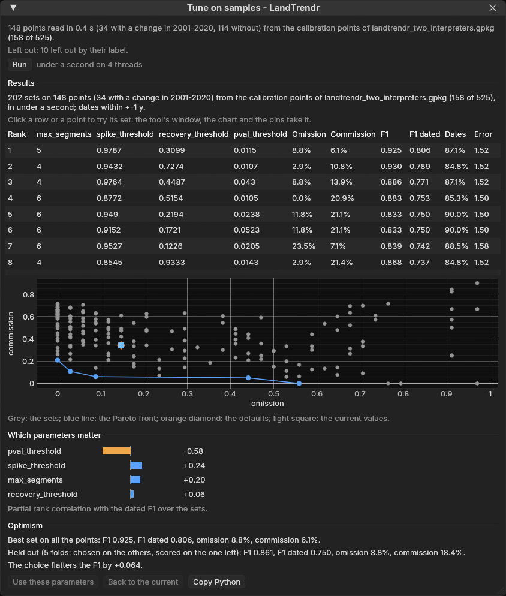
The table
The rows are sorted by the dated F1: a change found at the wrong date counts as both an omission and a false change, so a set that finds the changes but dates them badly does not win. The columns say what each set costs:
- Omission
- The reference's changes the map misses, of all of them.
- Commission
- The map's changes the reference does not have, of all of the map's.
- F1, F1 dated
- The balance of the two, without and with the dates counted.
- Dates, Error
- Of the changes found, the share whose year is within the tolerance, and the mean error in years.
The defaults come out 27th of 202: omission 14.7%, commission 34.1%, F1 0.744, dated F1 0.667. The best set, number 169, has 5 segments, a spike threshold of 0.979, a recovery threshold of 0.310 and a p-value of 0.0115: omission 8.8%, commission 6.1%, F1 0.925, dated F1 0.806. It trades a little of the dates (87.1% of the changes it finds are within a year, against 89.7%) for far fewer false changes.
The Pareto front
The scatter puts every set at its omission and its commission. Most are grey; the Pareto front, the sets no other beats on both at once, is the blue line (five sets here); the defaults and the current values are marked (they coincide, since nothing was edited). The best dated F1 is one point of the front, not the only reasonable one: the second set misses 2.9% of the changes against 8.8% and pays 10.8% commission against 6.1%, and one set on the front misses none and pays about 21%. Which of them is right depends on what the map is for. A map that guides inspection can accept false changes; one that counts hectares cannot.
Which parameters matter
The bars are the partial rank correlation of each varied parameter with the dated F1 over the 202 sets, the others held fixed (Marino et al. 2008). To the right, a larger value gives a better dated F1; to the left, a worse one. Here the p-value threshold matters most (−0.58: the stricter the test, the better; a lax one accepts models that follow the noise), then the spike threshold (+0.24) and the maximum number of segments (+0.20); the recovery threshold barely moves the score (+0.06). A parameter near zero is one you can leave at its default.
The optimism
The best of 202 sets is the best partly by luck. The check is a 5-fold one: the best set is chosen on four fifths of the points and scored on the fifth left out, five times. On all the points the best set has an F1 of 0.925 and a dated F1 of 0.806; held out, 0.861 and 0.750. The choice flatters the F1 by +0.064. The loss is in the commission: 6.1% in sample, 18.4% held out. Read the table's best row as an upper bound, and the held-out row as what to expect on points like these. A gap over 0.1 is shown in a warning colour.
07Trying a set on the chart
Click a row of the table, or a point of the scatter, and its set is tried: its parameters go into LandTrendr's window, so the chart and the pins fit with them at once, and the selected set is ringed in the scatter. The two pins here are calibration points chosen from the table's own columns: a clearing that the defaults get wrong and the best set gets right (a pixel cleared in 2007–2008), and a forest that stands throughout where the defaults see a change and the best set does not.

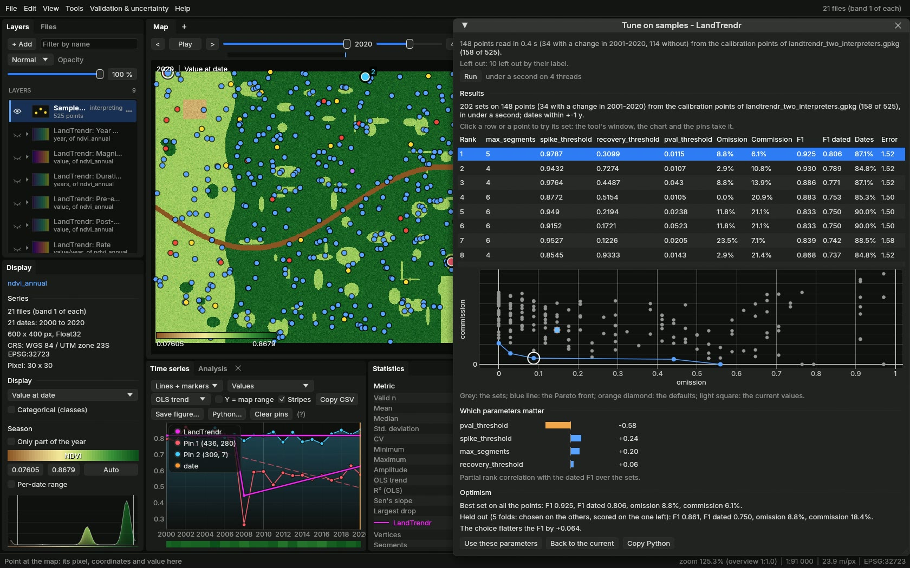

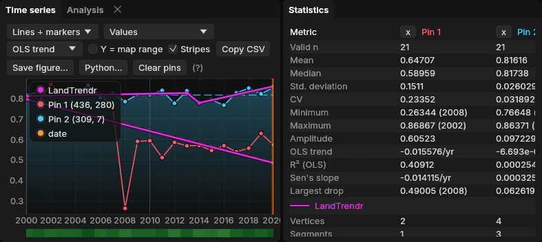

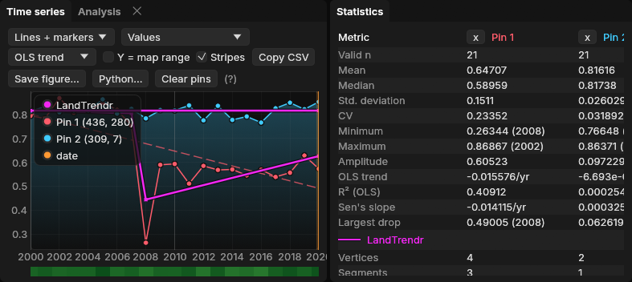
This is what the numbers of the table mean on a pixel, and the reason to look: a set that scores well and fits strange trajectories is a set to doubt. Try a few rows on the Pareto front before choosing, and try one on pins you know that the reference does not hold.
08Keeping the parameters
Use these parameters keeps the set tried as LandTrendr's parameters; Back to the current (or closing the window) puts the earlier ones back. Kept, they are in the tool's window like any others, the maps fit with them, and any run that uses them says where they came from.

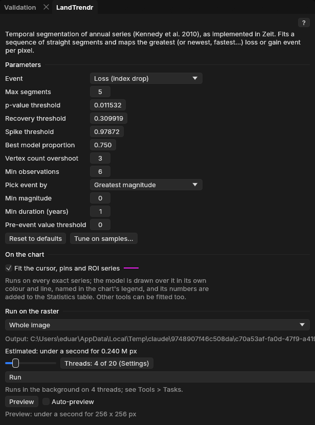
The record is a calibration entry in the run's provenance.json, and a tune.py beside the run's own rerun.py (the Python history shows both). Edit a parameter after keeping them and the next run no longer claims they came from the tuning. The entry, shortened:
"calibration": {
"reference": { "kind": "project", "file": ".../landtrendr_two_interpreters.gpkg",
"calibration_points": 158, "split": { "fraction": 0.3, "seed": "42", "points": 158 },
"labels": { "Deforestation": "change", "Degradation": "change", "Cloud / no data": "", ... } },
"points": 148, "changes_in_window": 34, "year_window": [2001, 2020], "tolerance_years": 1,
"weighted": false, "sets": 200, "seed": "1",
"varied": ["max_segments", "spike_threshold", "recovery_threshold", "pval_threshold"],
"chosen": { "set": "set 169", "rank": 1,
"params": { "max_segments": 5, "spike_threshold": 0.9787, "recovery_threshold": 0.3099, "pval_threshold": 0.0115 } },
"scores": { "omission": 0.088, "commission": 0.061, "f1": 0.925, "f1_dated": 0.806, ... },
"held_out_f1": 0.861, "python": "tune.py"
}09The maps, before and after
The proof is the map. LandTrendr was run on the whole image twice (240 000 pixels, a second each): first with the defaults, before the tuning, then with the set kept. Each year of detection was then added to the project, in the Maps tab of the Validation panel with Assess another map... (it offers the runs' results), and both are assessed on the same 328 accuracy points, those no calibration touched: 367 points are not in the split, less 21 without a label, 16 in disagreement and 2 left out by their label.

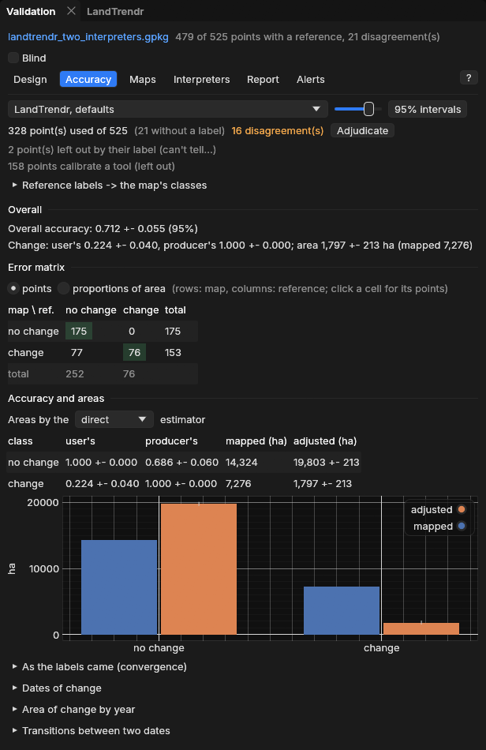

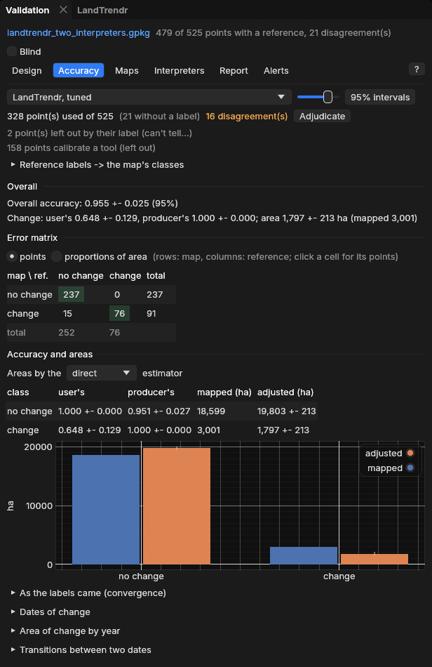
| Defaults | Set 169 | |
|---|---|---|
| Overall accuracy | 0.712 ± 0.055 | 0.955 ± 0.025 |
| Change: user's accuracy | 0.224 ± 0.040 | 0.648 ± 0.129 |
| Change: producer's accuracy | 1.000 ± 0.000 | 1.000 ± 0.000 |
| Area of change, mapped | 7,276 ha | 3,001 ha |
| Area of change, adjusted | 1,797 ± 213 ha | 1,797 ± 213 ha |
The tuned map's user's accuracy nearly triples and its mapped area falls from 7,276 to 3,001 ha, closer to the adjusted 1,797 ha. The adjusted area is the same for both: it depends on the reference labels and the strata, not on the map, and it is what a validation reports as the area of change, with its interval. The difference between the maps is in how much correcting they need, and in the interval of the user's accuracy, wider for the tuned map (±0.129) because only 91 points fall on it.
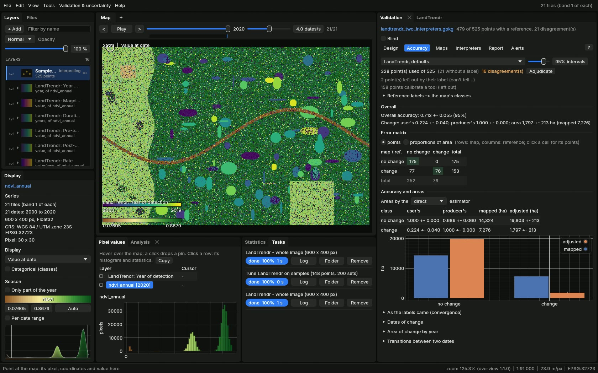
Against the truth
Because the data are synthetic, the maps can also be compared with the changes that really happened, pixel by pixel over the whole image, which no study can do. The truth is 21,827 pixels, 1,964 ha, of clearing or degradation. This comparison was made outside Janus, on the two years of detection and the truth rasters:
| Defaults | Set 169 | |
|---|---|---|
| Mapped change | 7,276 ha | 3,001 ha |
| True changes missed (omission) | 0.3% | 1.4% |
| False changes (commission) | 73.1% | 35.4% |
| F1 | 0.424 | 0.780 |
| Pixels right | 75.4% | 95.0% |
| Dates within a year of the truth, of the changes found | 87.9% | 90.1% |
The tuning helped beyond the points. The points said 0.712 and 0.955 for the overall accuracy and the truth says 75.4% and 95.0%, inside the intervals. The stratified estimate of the area, 1,797 ± 213 ha, holds the true 1,964 ha. And the tuning has a visible limit: 35% of what the tuned map calls a change is not one, 1,064 ha. 91% of those false pixels sit in specks of four pixels or fewer (the speckle that remains in the map above), against 26% for the defaults. The four parameters searched do not remove them; a minimum magnitude or a minimum duration would be the filters to try, and they are not among the parameters the search varies. It is the next thing to set, by looking at the same pins, and then to check on the same 328 points, which have still never tuned anything.
10Doing it again
The search is meant to be repeatable by someone who does not use Janus. Copy Python, beside Use these parameters, copies a script with Zeit that redoes it: it reads each reference point's series as the script of a pin does, writes out the 202 sets with the values the search sampled (so it needs no random generator to match), runs zeit.landtrendr once per set on all the points together, takes the year of the change the map would show, scores it with the same definitions as the window and prints the table in the same order. This one is 477 lines, the points and the sets being most of them:
"""Janus 1.20.0: the search of LandTrendr's parameters on samples (Tune on samples) over ndvi_annual, redone outside Janus with Zeit.
Reference: the calibration points of landtrendr_two_interpreters.gpkg (158 of 525)
Needs: pip install "zeit-cdts>=3.2"
"""
import numpy as np
import xarray as xr
import zeit
SEARCH = True # False to skip the search (it runs every set on every point)
N_JOBS = 4 # the threads Zeit uses for each set (the sets run one after the other)Run on this project, it prints the table (the same 202 rows, the same order, set 169 first) and ends with a line that says how far it is from Janus: the dated F1 differs from Janus's table by 0 at most. The run also leaves it as tune.py beside the map's script, so the search that chose the parameters travels with the map.
An assistant can do the same without the window: the MCP tool tune_tool takes the tool, the series, the reference (a project, whose calibration split it uses and which it refuses without one, or a vector file with its date field) and the same settings, and answers with the table of sets, the Pareto front, which parameters matter, the held-out check and the Python:
{ "tool": "landtrendr",
"series": "ndvi_annual",
"reference": "landtrendr_two_interpreters.gpkg",
"years": [2001, 2020], "tolerance": 1, "n_sets": 200, "seed": 1 }The same section of the usage notes has every option.
11What it cannot do
- It cannot tell more than the points know. With 34 changes the scores wobble, the held-out check is itself uncertain, and a rare kind of change (a degradation that recovers in five years, a regrowth) is a handful of points the search can ignore without paying for it. More points with a change, interpreted well, are the best tuning there is.
- It tunes to the labels, not to the truth. If the interpreters call a change what the series cannot show, the tool is tuned to find it. The interpretation is the reference; check it first.
- The accuracy points are for the accuracy. If you read the accuracy, change the parameters and read it again, you have tuned on the accuracy points. Draw a new calibration split before another round, or a new sample, and say so. The window keeps the split in the project, with its seed.
- The sets are a hypercube, not an optimiser. Two hundred sets over four parameters find a good region, not the optimum; a finer search around the best set, with narrower ranges (they are editable), is cheap.
The same window tunes the other tools that give a change date, with their own parameters and their own literature: CCDC, S-CCD, BFAST and BFAST Lite and Monitor, CODED, EWMACD and BEAST. This guide's tool has its own page, LandTrendr, and the accuracy it ends in is the subject of Validating a map.
12References
- Cohen, W. B., Yang, Z., Healey, S. P., Kennedy, R. E., Gorelick, N. (2018). A LandTrendr multispectral ensemble for forest disturbance detection. Remote Sensing of Environment, 205, 131–140.
- Cohen, W. B., Healey, S. P., Yang, Z., Stehman, S. V., Brewer, C. K., Brooks, E. B., et al. (2017). How similar are forest disturbance maps derived from different Landsat time series algorithms? Forests, 8(4), 98.
- Kennedy, R. E., Yang, Z., Cohen, W. B. (2010). Detecting trends in forest disturbance and recovery using yearly Landsat time series: 1. LandTrendr — Temporal segmentation algorithms. Remote Sensing of Environment, 114, 2897–2910.
- Marino, S., Hogue, I. B., Ray, C. J., Kirschner, D. E. (2008). A methodology for performing global uncertainty and sensitivity analysis in systems biology. Journal of Theoretical Biology, 254(1), 178–196.
- McKay, M. D., Beckman, R. J., Conover, W. J. (1979). A comparison of three methods for selecting values of input variables in the analysis of output from a computer code. Technometrics, 21(2), 239–245.
- Olofsson, P., Foody, G. M., Herold, M., Stehman, S. V., Woodcock, C. E., Wulder, M. A. (2014). Good practices for estimating area and assessing accuracy of land change. Remote Sensing of Environment, 148, 42–57.
- Stehman, S. V. (2014). Estimating area and map accuracy for stratified random sampling when the strata are different from the map classes. International Journal of Remote Sensing, 35(13), 4923–4939.
- Zeit: the change detection library behind the tools of Janus.